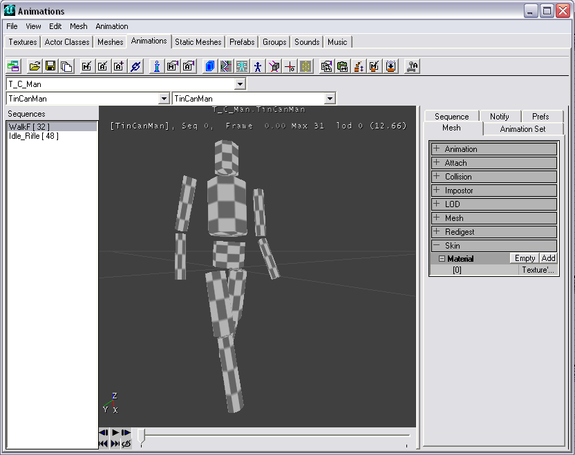
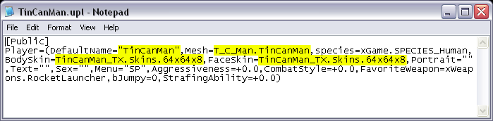

Maya PLE Character Model Tutorial Part 5
Getting Into the Game
Modeling done, IK rigging complete, animation sequences finalized, and a spot of texturing applied – TinCanMan is ready for prime-time. This chapter of the tutorial will re-iterate the model export instructions from Epic, but it's part of the process and doesn't suffer from repetition.
IMPORTANT NOTE: This part of the tutorial assumes you have edited the system environment variable according to the instructions on CD#3 of the UT2003 release, and that the unEditor.mll plug-in loads successfully.
First save the TinCanMan file and use File>New to clear the workspace. Use Window>Settings/Preferences>Plug-in Manager to open the Plug-in Manager. Check the box next to unEditor.mll. UnrealEd should open as the plug-in loads. (The reason for the File>New before loading the plug-in is that I've repeatedly had Maya PLE & UEd crash if a scene of any complexity is open when loading unEditor.mll, but it always works OK if I do File>New first.)
Switch back to Maya PLE, close the Plug-in Manager dialog, and open the TinCanMan file.
90. Switch to the Modeling editor. Select SkinMesh. Use Polygons>Triangulate to explicitly insure all the SkinMesh polys are triangulated – unEditor.mll does not automatically triangulate on export. Save the file.
91. In Outliner, select RootBone. In the main menu use Create>Sets>Set>OPTIONS to open the Create Set dialog. In the Name field enter TinCanMan and click Apply and Close.
92. In Outliner, select TinCanMan. Be sure it is the only object selected in Outliner, then open the Attribute Editor by 2-clicking the TinCanMan set icon.
93. Expand the Extra Attributes section (it will be empty). In the Attribute Editor menu, use Attributes>Add Attributes to open the Add Attribute dialog.
94. In the Add Attribute dialog, enable the String radio button in the Data Type section, type in package for the Attribute Name, then click Add.
Type animargs in the Attribute Name field and click Add.
Change the Data Type to Float and type scale in the Attribute Name field. Click Add. Close the Add Attribute dialog.
95. The Attribute Editor Extra Attributes section should now contain the three newly-added attributes. In the package field of Additional Attributes, enter T_C_Man. In the Scale field enter 2.0. In the animargs field type
WalkF 10 41 Idle_Rifle 50 97
Note that the frame-range for the two animation sequences is one frame short of the full sequence length that was keyframed. That's because the start & end frames of the animation cycles are identical, and only one of them is needed in the cycle when played back. The slight pause caused by having two identical frames in the loop can sometimes be quite apparent, so it's best to leave one out.
If you checked out the xPawn.uc file, or looked carefully at the animation sequences list in the UEd Animations browser, you'll recognize that the names chosen for TinCanMan's anims match those used for UT2003's "stock" characters. This isn't an absolute necessity, but it greatly simplifies the steps needed to get the model into the game. More info about this in a future tutorial.
96. In the Command Line type
unEditor anim TinCanMan
and hit Enter. The viewport should show the model animations playing through once at fast speed while the model exports. The Command Feedback should report Result: [1] animating meshes(s) exported
97. Switch to UEd and open the Textures browser. Import the texture file that was applied in Maya PLE, using package name TinCanMan_TX and group name Skins. Save the package in the UT2003/Textures directory. Select the newly-imported texture in the Texture browser.
98. Open the Animations browser and use the package-select drop-down to select T_C_Man from the list. The other fields at the top of the browser should read TinCanMan, and the animation sequence list should show WalkF[32] and Idle_Rifle[48]. The model will have the Engine.Default texture. Select an animation sequence, enable looping in the playback controls, and play the animation. Cool.
99. In the Mesh tab at the right of the browser, expand Skin fully, click Add, then Use, to apply the newly-imported TinCanMan texture to the model in the Skin(0) slot. Save the file in the UT2003/Animations directory as T_C_Man.ukx.

FIG 26. TinCanMan in the UEd Animations browser |
TinCanMan is now available for use by UT2003, but a another step is needed to insure he can be easily selected for use by the engine or a player. Return to Maya PLE, save the file and quit. UEd will close also since it was opened as a plug-in.
100. A .upl file must be created for TinCanMan. This text file contains references to character specifications, and is necessary if the character is to appear in the Instant Action menu Player roster.
The entries highlighted in FIG 27 are the minimum necessary to identify TinCanMan to the game. Make sure you enter the filenames you chose for the .ukx and .utx packages in the Mesh and Skins parameters, respectively. The file can be created in Notepad and saved to the UT2003/System directory. Name it TinCanMan.upl.

FIG. 27 Example text for TinCanMan.upl |
A "fully-fleshed" .upl file will also reference a Portrait image file (256w x 512d) to fill the new slot in the Player tab character lineup (rather than the big question mark that will show otherwise), and a short Text description entered in xPlayers.int (in the DecoText section) that appears as the character's Bio. Check xPlayersL1.upl for clues to syntax, etc. for these specifications.
Now it's time to try out TinCanMan.
101. Launch UT2003, go to the Player tab, and scroll through the roster lineup – you should see a big question mark among the character portraits (unless you were industrious enough to make a portrait for TinCanMan and specify it in the .upl file). Select this image and click on the Bio/3D View button at the right of the interface. TinCanMan should appear here. If not, don't worry, it's not a killer problem.
Select your favorite map, set the bot count to 0 (TinCanMan is easy prey – give 'im a chance!), and Play the map.
When the character spawns, it should display the Idle_Rifle animation. Press the Shift key and your forward motion key (e.g., W), and TinCanMan will walk forward, displaying the walk cycle he was given. However, any other movement keys won't produce new animations, because TinCanMan has only two sequences identified in his .ukx file – WalkF and Idle_Rifle. This is all the engine knows to play for this character. If you showlog and try walking to the left, the engine logs a warning that a certain anim sequence it expects can't be found. The remedy is to provide the character with a complete set of animation sequences, with names that match those the engine expects for xPawn.
So that's it – 101 steps and you have a Maya PLE character model in the game. TinCanMan isn't much use for fighting a deathmatch (though it's possible, if you can contain the snickers), but the steps required to manufacture and import a fully-animated mega-death-dealing model of your own creation are the same, just more complex in detail.
More Customization
Beyond the 101 steps lies a vast territory wherein all varieties of creatures are possible. But those require more a elaborate process to make them fully useable in-game. The modeling and animation steps in Maya PLE are the same (if more sophisticated), but for advanced custom characters (i.e., those whose actions/animations don't match up with the given defaults for xPawn), substantially more effort is required to get them to function properly in the Unreal universe. This is the approach a total conversion mod might take for its characters. A tutorial covering this process is in the R&D stage.
Also in the works is information about using the Animations browser to fine-tune an imported model, including how to attach weapons and game effects to designated bones. For now, check the UDN tutorials, they're a prime source: